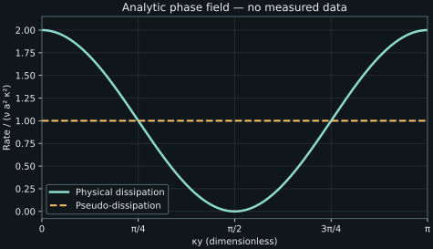

5. Exact Reynolds-stress transport
The mean channel equation requires a fluctuating momentum flux. Deriving six equations for its six covariance components seems a natural way to avoid an assumed viscosity. The equations do reveal more physics, but they also introduce pressure correlations, velocity-gradient correlations, and third moments. Understanding their structure is essential: a divergence transports a quantity through space, a pressure-strain term redistributes component energy, and molecular action removes mechanical energy. Treating all three as one “diffusion” mechanism would hide the very information a stress model is meant to retain.
Lessons 12–13 rearrange the raw second-moment equation, identify its budget terms, and expose the next closure problem. The derivations below make all product-rule steps explicit. Symmetry reduces the independent component counts relative to raw array sizes. A separate analytic phase field distinguishes the commonly used pseudo-dissipation from local strain-based physical dissipation; it is a kinematic construction rather than a complete turbulent-flow solution.
5.1 Keep the assumptions and indices fixed L12 · 00:15
Use constant density \(\rho\), in kg/m³, constant positive kinematic viscosity \(\nu\), in m²/s, and incompressible Newtonian motion. Body acceleration is absent or deterministic and common to the ensemble, so it contributes no fluctuating forcing. Mean velocity is \(U_i=\mathbb E[u_i]\), and fluctuations satisfy \(\mathbb E[u'_i]=0\) and \(\partial_iu'_i=0\). Pressure fluctuation is \(p'=p-\mathbb E[p]\), in Pa. Required moments and derivatives exist and commute with expectation.
Let \(R_{ij}=\mathbb E[u'_iu'_j]\), in m²/s². In this chapter \(i,j\) label its two free stress components, while \(\ell\) is a summed transport direction. This consistently renames the free and summed labels used in the preceding raw derivation. Define \(D_U=\partial_t+U_\ell\partial_\ell\), following the mean flow. Multiplying fluctuating momentum by a second fluctuation, exchanging free indices, and adding gives
\[ \begin{aligned} D_UR_{ij}={}&P_{ij} -{1\over\rho}\mathbb E[u'_j\partial_ip'+u'_i\partial_jp']\\ &+\nu\mathbb E[u'_j\partial_\ell\partial_\ell u'_i +u'_i\partial_\ell\partial_\ell u'_j]\\ &-\mathbb E[u'_ju'_\ell\partial_\ell u'_i +u'_iu'_\ell\partial_\ell u'_j],\\ P_{ij}={}&-R_{j\ell}\partial_\ell U_i-R_{i\ell}\partial_\ell U_j. \end{aligned}\tag{5.1} \]The production tensor \(P_{ij}\), in m²/s³, already depends only on mean gradients and covariance. Every other right-hand term still mixes derivatives and correlations. Rearrangement will distinguish a flux derivative from a local term; it will not add a turbulence approximation.
5.2 Pressure produces transport and redistribution L12 · 02:04
Apply the product rule to one pressure contribution: \(u'_j\partial_ip'=\partial_i(p'u'_j)-p'\partial_iu'_j\). Do the same with free indices exchanged, then average. Define the pressure-velocity flux \(q_i=\mathbb E[p'u'_i]/\rho\), in m³/s³, and the pressure-strain correlation
\[ \Pi_{ij}={1\over\rho}\mathbb E[ p'(\partial_iu'_j+\partial_ju'_i)]. \]The pressure contribution becomes
\[ -{1\over\rho}\mathbb E[u'_j\partial_ip'+u'_i\partial_jp'] =-\partial_iq_j-\partial_jq_i+\Pi_{ij} =-\partial_\ell(\delta_{i\ell}q_j+\delta_{j\ell}q_i)+\Pi_{ij}. \tag{5.2} \]The Kronecker deltas select \(\ell=i\) or \(\ell=j\), changing only the notation of the derivative. They do not approximate a derivative along one direction by a derivative along another. This is why the free indices must remain \(i,j\) throughout.
The first part is a divergence of pressure transport. Integrating it over a region turns it into boundary flux. The second part correlates pressure with fluctuating strain rate. Define \(s'_{ij}=(\partial_ju'_i+\partial_iu'_j)/2\), in s⁻¹; then \(\Pi_{ij}=2\mathbb E[p's'_{ij}]/\rho\). The same pressure-gradient work therefore has two roles in this decomposition. One moves component energy through space; the other exchanges it among directions.
Both signs and density matter. The covariance here is positive on its diagonal, while the effective stress in mean momentum is \(-\rho R_{ij}\). A transport equation for that negative stress would reverse corresponding signs when translated. The Turbulence Modeling Resource SSG/LRR specification explicitly uses the positive density-weighted covariance for its transported stresses; at constant density it corresponds to \(\rho R_{ij}\), not the negative effective stress.
5.3 Molecular diffusion and a gradient covariance L12 · 03:48
A second derivative of a product has two cross-gradient terms. For each summed direction \(\ell\),
\[ \partial_\ell\partial_\ell(u'_iu'_j) =u'_j\partial_\ell\partial_\ell u'_i +u'_i\partial_\ell\partial_\ell u'_j +2(\partial_\ell u'_i)(\partial_\ell u'_j). \]Move the last term to the other side, average, and multiply by \(\nu\). Define
\[ \varepsilon_{ij} =2\nu\mathbb E[(\partial_\ell u'_i)(\partial_\ell u'_j)]. \]This is a symmetric gradient-covariance tensor, with units m²/s³. It differs from the three-index Levi-Civita symbol \(\epsilon_{ijk}\). The viscous contribution in (5.1) is exactly
\[ \nu\mathbb E[u'_j\partial_\ell\partial_\ell u'_i +u'_i\partial_\ell\partial_\ell u'_j] =\nu\partial_\ell\partial_\ell R_{ij}-\varepsilon_{ij}. \tag{5.3} \]The first term is molecular diffusion of covariance. It contains the covariance already being transported and adds no new statistical field. The second contains covariance of velocity gradients, which is not known from single-point velocity covariance alone. Two fields can have equal local fluctuation variances but different spatial scales and therefore different gradients.
For any deterministic vector \(a_i\), \(a_i\varepsilon_{ij}a_j=2\nu\mathbb E[\sum_\ell(a_i\partial_\ell u'_i)^2]\ge0\). Thus \(\varepsilon_{ij}\) is positive semidefinite. Each diagonal removes its component variance through \(-\varepsilon_{ii}\). An off-diagonal entry can have either sign; destruction of a signed cross covariance is not described by saying every entry must decrease numerically. Its half trace is nonnegative. The precise relation to strain-based physical dissipation requires a further distinction below.
5.4 Third moments become a transport flux L12 · 07:06
The nonlinear contribution contains two pieces of a three-factor product derivative. Fluctuating continuity supplies the missing zero:
\[ \begin{aligned} u'_ju'_\ell\partial_\ell u'_i +u'_iu'_\ell\partial_\ell u'_j +u'_iu'_j\partial_\ell u'_\ell =\partial_\ell(u'_iu'_ju'_\ell). \end{aligned} \]The third term is zero pointwise. Define \(M_{ij\ell}=\mathbb E[u'_iu'_ju'_\ell]\), in m³/s³. The final line of (5.1) is \(-\partial_\ell M_{ij\ell}\). This is an exact triple-velocity transport, not a local gradient-diffusion assumption. It can move covariance in a direction that a simple viscosity analogy would not predict.
Collect the three flux contributions into
\[ F_{ij\ell}=M_{ij\ell}+\delta_{i\ell}q_j+\delta_{j\ell}q_i -\nu\partial_\ell R_{ij}. \]Every part has units m³/s³. Their divergence has covariance-rate units m²/s³. Combining (5.1)–(5.3) gives the exact incompressible Reynolds-stress transport equation in the chosen decomposition:
\[ \boxed{D_UR_{ij}=P_{ij}+\Pi_{ij}-\varepsilon_{ij} -\partial_\ell F_{ij\ell}.} \tag{5.4} \]No model coefficient has appeared. The mean-advection form can also be written conservatively because \(\partial_\ell U_\ell=0\): \(\partial_tR_{ij}+\partial_\ell(U_\ell R_{ij}+F_{ij\ell})=P_{ij}+\Pi_{ij}-\varepsilon_{ij}\). The chosen grouping makes exact mathematical roles inspectable before any approximation is made.
5.5 Transport is a boundary exchange L13 · 00:15
For a fixed region \(V\), integrate the conservative form. With outward unit normal \(n_\ell\),
\[ {d\over dt}\int_VR_{ij}\,dV =-\int_{\partial V}(U_\ell R_{ij}+F_{ij\ell})n_\ell\,dA +\int_V(P_{ij}+\Pi_{ij}-\varepsilon_{ij})\,dV. \tag{5.5} \]The net flux can increase a component locally by bringing it from elsewhere. It does not create a volume-integrated amount when opposite periodic faces cancel. A closed or periodic global balance still needs its boundary terms examined; setting every transport term to zero pointwise is much stronger than showing its integral vanishes.
The source calls all three divergence contributions diffusion or transport. Molecular diffusion is explicitly a gradient flux with known \(\nu\). Triple-velocity and pressure transport are not yet specified as gradients, and their fluxes need not smooth every component monotonically. Later modeling may approximate them by gradient laws. That approximation changes the equation and must not be confused with the exact product-rule rearrangement.
In a spatially homogeneous region, statistical gradients of appropriate quantities vanish, so these divergences can disappear. In the channel, wall-normal variation persists even when the statistics are homogeneous along the walls. Dropping wall-normal transport solely because the mean flow is fully developed would remove terms that can balance local production and destruction.
5.6 Pressure-strain has zero trace L13 · 03:45
The pressure-strain tensor is symmetric by its definition. Its trace is
\[ \Pi_{ii}={2\over\rho}\mathbb E[p'\partial_iu'_i]=0. \tag{5.6} \]The last equality uses incompressibility inside each realization. It is pointwise in the statistical field and does not require a homogeneous region or a volume integral. Pressure transport can still move total fluctuation energy between locations. The zero-trace result concerns the separate local redistribution term, not every contribution containing pressure.
For illustration, suppose a local bookkeeping rate is \(\Pi=\operatorname{diag}(-2,1,1)\) m²/s³. Starting from \(R=\operatorname{diag}(4,1,1)\) m²/s² and retaining only this rate for half a second gives \(\operatorname{diag}(3,1.5,1.5)\). The half trace remains 3 m²/s². One component decreases while two increase. These assigned rates illustrate the trace constraint; no pressure and velocity field has been claimed to generate them. Extending such a constant rate indefinitely would eventually violate covariance positivity, so a local trace test alone is not a complete realizable model.
In the channel, streamwise mean shear directly produces streamwise normal variance, as the next calculation shows. Other component energies need not receive direct production. Redistribution and transport can nevertheless sustain them. This is why one scalar eddy viscosity may omit important directional behavior even when it represents a mean shear flux reasonably.
5.7 Production and the energy trace L13 · 05:13
Define turbulent kinetic energy per unit mass \(k=R_{ii}/2\), in m²/s². Half the production trace is \(P_k=-R_{i\ell}\partial_\ell U_i\). Because \(R\) is symmetric, its contraction with the antisymmetric part of the mean gradient vanishes. Therefore \(P_k=-R_{i\ell}S_{i\ell}\), where \(S\) is mean strain rate. Mean rotation alone does not contribute this scalar production.
For \(U_i=(U(y),0,0)\), with local shear \(S=dU/dy\), \(P_{11}=-2SR_{12}\), \(P_{12}=-SR_{22}\), and \(P_{13}=-SR_{23}\), with symmetric partners and other entries zero. Take \(S=2\) s⁻¹ and \(R=\begin{bmatrix}4&-1&0\\-1&1&0\\0&0&1/4\end{bmatrix}\) m²/s². Then \(P=\begin{bmatrix}4&-2&0\\-2&0&0\\0&0&0\end{bmatrix}\) m²/s³ and \(P_k=2\) m²/s³. Production is not a covariance and need not be positive semidefinite.
Let \(\varepsilon=\varepsilon_{ii}/2=\nu\mathbb E[(\partial_\ell u'_i)(\partial_\ell u'_i)]\), and let \(F_\ell=F_{ii\ell}/2\), where the repeated component index is summed. Half the trace of (5.4) is
\[ D_Uk=P_k-\varepsilon-\partial_\ell F_\ell. \tag{5.7} \]Pressure-strain cancels, but pressure transport remains within \(F_\ell\). A statistically stationary homogeneous unforced balance would require \(P_k=\varepsilon\). That conclusion requires all those conditions. With zero mean gradient, an initially fluctuating flow can decay, and fluctuating external forcing can sustain motion through additional terms omitted from the present model. Zero mean-shear production is not proof that fluctuations vanish.
The SSG/LRR definition labels its production expression exact while specifying closures for dissipation, pressure-strain, and diffusion. Its modeled dissipation tensor must not be substituted into (5.4) and then described as a new exact identity. The distinction is between an exact budget and a selected approximation to its missing information.
5.8 More equations retain more information and need more closure L13 · 08:20
Production and molecular diffusion depend on fields already retained: \(U_i,R_{ij}\), and known \(\nu\). The triple moment, pressure-velocity flux, pressure-strain, and gradient covariance need additional information. Their array sizes must be distinguished from independent components. The triple moment is fully symmetric and has ten independent components in three dimensions. The pressure flux has three. Pressure-strain is symmetric and traceless, leaving five. The symmetric gradient-covariance tensor has six. These component properties do not make the missing quantities functions of the local mean and covariance.
A scalar counterexample suffices for the higher-moment obstruction. Distribution A takes \(-1,+1\) equally; its mean is zero, variance one, and third moment zero. Distribution B takes \(-1/\sqrt2\) with probability \(2/3\) and \(\sqrt2\) with probability \(1/3\). Its mean is zero, second moment is \(1/3+2/3=1\), and third moment is \(1/\sqrt2\). Equal means and second moments leave different third moments. Transport equations for those third moments introduce still higher correlations. Counting fields helps organize the hierarchy, but no finite raw-component count proves that all of its dynamical constraints are independent.
Pressure itself is linked nonlocally to velocity gradients through a Poisson equation and its boundary conditions. Its correlations cannot generally be determined from the covariance at one location. Likewise, equal velocity variance does not establish equal gradient variance: a shorter spatial wavelength can increase gradients without changing a local amplitude. Modeling these quantities requires assumptions about spatial organization, pressure response, and scales, rather than merely another name for viscosity.
Physical dissipation and pseudo-dissipation
The scalar \(\varepsilon\) in (5.7) is often called dissipation; more precisely it is the pseudo-dissipation associated with this viscous-diffusion grouping. The physical conversion of fluctuating kinetic energy to internal energy per unit mass is \(\varepsilon_{\rm phys}=2\nu\mathbb E[s'_{ij}s'_{ij}]\), derived from molecular stress work in chapter 3. Put \(A_{ij}=\partial_ju'_i\). Expanding the symmetric part gives
\[ \varepsilon_{\rm phys} =\nu\mathbb E[A_{ij}A_{ij}+A_{ij}A_{ji}] =\varepsilon+\nu\partial_i\partial_jR_{ij}. \tag{5.8} \]For the last equality, differentiate \(R_{ij}=\mathbb E[u'_iu'_j]\) twice. Terms containing \(\partial_iu'_i\), \(\partial_ju'_j\), or their derivatives vanish by incompressibility, leaving \(\mathbb E[(\partial_ju'_i)(\partial_iu'_j)]\). The two scalar rates can therefore differ locally in an inhomogeneous field. Their difference is itself a divergence and can be moved into the transport grouping without changing the exact energy budget.
Reuse a smooth kinematic phase field: \(u'=a\sin(\kappa x+\phi)\cos(\kappa y)\), \(v'=-a\cos(\kappa x+\phi)\sin(\kappa y)\), \(w'=0\). Here \(a\) is a velocity amplitude, \(\kappa\) a wavenumber in m⁻¹, and four equally likely phases \(\phi=0,\pi/2,\pi,3\pi/2\) give zero means. Direct differentiation gives zero divergence, \(R_{12}=0\), \(R_{22}=a^2\sin^2(\kappa y)/2\), and
\[ \varepsilon=\nu a^2\kappa^2,\qquad \varepsilon_{\rm phys}=2\nu a^2\kappa^2\cos^2(\kappa y),\qquad \nu\partial_i\partial_jR_{ij}=\nu a^2\kappa^2\cos(2\kappa y). \]At \(\kappa y=\pi/2\), the local gradient is antisymmetric and physical strain dissipation is zero, while pseudo-dissipation is positive. With \(a=1\) m/s, \(\kappa=1\) m⁻¹, and \(\nu=0.01\) m²/s, the two are zero and \(0.01\) m²/s³ there. At \(y=0\), they are \(0.02\) and \(0.01\). Their averages over a full \(y\)-period agree because the cosine correction integrates to zero. These fields are not asserted to solve the complete fluctuation dynamics; they check the identity and show why a local distinction matters.


5.9 Execute production, trace, and dissipation checks
The standard-library program constructs production by its indexed definition, verifies its energy trace, and checks trace-free redistribution bookkeeping. It then evaluates gradients of the four-phase field and computes both dissipation definitions directly. The double-divergence correction is computed independently from the analytic covariance. A periodic average checks cancellation of that correction. It prints results and has no file or network effects. See code/ch05_stress_budget.py.
"""Exact algebraic and kinematic budget checks, not a complete flow solver."""
from math import cos, isclose, pi, sin
cov = [[4., -1., 0.], [-1., 1., 0.], [0., 0., .25]]
mean_gradient = [[0., 2., 0.], [0., 0., 0.], [0., 0., 0.]]
production = [[-sum(cov[j][l] * mean_gradient[i][l]
+ cov[i][l] * mean_gradient[j][l]
for l in range(3)) for j in range(3)] for i in range(3)]
tke_production = sum(production[i][i] for i in range(3)) / 2
assert tke_production == 2.
redistribution = [-2., 1., 1.]
assert sum(redistribution) == 0.
after = [value + .5 * rate for value, rate
in zip([4., 1., 1.], redistribution)]
assert sum(after) == 6.
nu, amp, wave, x = .01, 1., 1., .2
def dissipation(y):
pseudo, physical = 0., 0.
for phase in [0., pi / 2, pi, 3 * pi / 2]:
xx, yy = wave * x + phase, wave * y
gradient = [[amp * wave * cos(xx) * cos(yy),
-amp * wave * sin(xx) * sin(yy)],
[amp * wave * sin(xx) * sin(yy),
-amp * wave * cos(xx) * cos(yy)]]
assert isclose(gradient[0][0] + gradient[1][1], 0., abs_tol=1e-14)
pseudo += nu * sum(value**2 for row in gradient for value in row) / 4
physical += 2 * nu * sum(
((gradient[i][j] + gradient[j][i]) / 2)**2
for i in range(2) for j in range(2)) / 4
correction = nu * amp**2 * wave**2 * cos(2 * wave * y)
assert isclose(physical, pseudo + correction, abs_tol=1e-14)
return pseudo, physical, correction
print('production tensor:', production)
print(f'TKE production m2/s3: {tke_production:.6f}')
print('redistribution-only diagonal after 0.5 s:', after)
for y in [0., pi / 2]:
pseudo, physical, correction = dissipation(y)
print(f'y={y:.6f}: pseudo={pseudo:.6f}, physical={physical:.6f}, '
f'correction={correction:.6f}')
period_mean = sum(dissipation(2 * pi * i / 400)[1]
for i in range(400)) / 400
assert isclose(period_mean, nu * amp**2 * wave**2, abs_tol=1e-14)
print(f'period-mean physical dissipation m2/s3: {period_mean:.6f}')
production tensor: [[4.0, -2.0, -0.0], [-2.0, -0.0, -0.0], [-0.0, -0.0, -0.0]] TKE production m2/s3: 2.000000 redistribution-only diagonal after 0.5 s: [3.0, 1.5, 1.5] y=0.000000: pseudo=0.010000, physical=0.020000, correction=0.010000 y=1.570796: pseudo=0.010000, physical=0.000000, correction=-0.010000 period-mean physical dissipation m2/s3: 0.010000
The code checks algebraic and kinematic identities. It does not provide the phase field with a compatible pressure and time evolution, implement an RSM closure, or validate a model against measurements. Passing one budget identity cannot establish all of those further requirements.
5.10 Problems and worked solutions
1. Recover pressure transport. Starting with \(-\mathbb E[u'_j\partial_ip'+u'_i\partial_jp']/\rho\), derive the divergence and redistribution parts, with all signs.
Solution
For each product, \(u'_j\partial_ip'=\partial_i(p'u'_j)-p'\partial_iu'_j\). The leading negative sign gives \(-\partial_i\mathbb E[p'u'_j]/\rho+\mathbb E[p'\partial_iu'_j]/\rho\), and similarly for the exchanged indices. The derivative pieces are \(-\partial_iq_j-\partial_jq_i\); the remaining symmetric sum is \(\Pi_{ij}\). Inserting deltas rewrites the derivative pieces as \(-\partial_\ell(\delta_{i\ell}q_j+\delta_{j\ell}q_i)\). The redistribution sign is positive because the two product-rule negative signs cancel.
2. What integrates to zero? In a periodic box with periodic mean velocity, covariance, and fluxes, integrate (5.4). Which terms necessarily vanish after taking the energy trace, and which need not?
Solution
Write mean advection conservatively using zero mean divergence. Opposite periodic faces cancel both advective and transport flux integrals. Half the pressure-strain trace vanishes pointwise. The remaining energy relation is \(d\int k\,dV/dt=\int(P_k-\varepsilon)\,dV\). Production and pseudo-dissipation need not vanish. Stationarity would set the left side to zero, but periodicity alone does not. The corresponding strain-based physical dissipation has the same volume integral because the correction in (5.8) is a periodic divergence.
3. A signed destruction entry. Let the only nonzero gradient column be the \(x_3\) derivative, taking vectors \(g=(1,-2,0)\) s⁻¹ and \(-g\) with equal probability. Calculate \(2\nu\mathbb E[gg^{\mathsf T}]\). Can a negative off-diagonal entry coexist with positive semidefiniteness?
Solution
The tensor is \(2\nu\begin{bmatrix}1&-2&0\\-2&4&0\\0&0&0\end{bmatrix}\), because changing every sign leaves the outer product unchanged. Its 12 entry is negative. For any \(\mathbf a\), the quadratic form is \(2\nu(a_1-2a_2)^2\ge0\), so it is positive semidefinite. The opposite signed linear fields \(\mathbf u'=\pm(z,-2z,0)\), with the implied coefficient 1 s⁻¹ and \(z\) in metres, realize these zero-mean gradients and are divergence free. This local construction does not establish turbulent dynamics or boundary data. Componentwise negativity of \(-\varepsilon_{ij}\) is not its defining constraint.
4. Redistribution and positivity. Continue the constant redistribution-only rate in §5.6 for time \(t\). Find when the diagonal covariance first ceases to be positive semidefinite.
Solution
The covariance is \(\operatorname{diag}(4-2t,1+t,1+t)\) in the corresponding units. For \(t\ge0\), the last two entries stay positive, while the first reaches zero at two seconds and becomes negative after that. The tensor remains positive semidefinite through \(t=2\), then fails. Its trace stays six throughout, so trace preservation alone does not guarantee realizability. A dynamic closure must respect more than total energy.
5. Equal second moments, unequal third moments. Verify distribution B in §5.8 and compare it with A. What does this demonstrate about a proposed universal local function \(M_{111}=f(U_1,R_{11})\)?
Solution
B has mean \(-2/(3\sqrt2)+\sqrt2/3=0\), second moment \((2/3)(1/2)+(1/3)2=1\), and third moment \(-(2/3)(1/(2\sqrt2))+(1/3)2\sqrt2=1/\sqrt2\). A has the same first two moments and third moment zero. A single function of those two identical inputs cannot return both third moments. This disproves an unrestricted distribution-level local rule, not the usefulness of a fitted rule on a restricted class of flows with additional assumptions.
6. Move the dissipation correction into flux. Let \(B_i=\nu\partial_jR_{ij}\). Rewrite (5.7) using \(\varepsilon_{\rm phys}\) instead of \(\varepsilon\). Determine the modified energy flux and check its sign.
Solution
Equation (5.8) gives \(\varepsilon_{\rm phys}=\varepsilon+\partial_iB_i\), so \(-\varepsilon=-\varepsilon_{\rm phys}+\partial_iB_i\). Substitute into \(D_Uk=P_k-\varepsilon-\partial_iF_i\): \(D_Uk=P_k-\varepsilon_{\rm phys}-\partial_i(F_i-B_i)\). Thus the modified flux is \(F_i-B_i\). Replacing the dissipation without changing this flux would alter the local budget. The two decompositions can agree globally while differing in their local transport/destruction split.
7. Direct production is directional. For the channel covariance and shear used in §5.7, calculate the rate of wall-normal variance from production alone. Why can a nonzero wall-normal variance still be present?
Solution
Only the streamwise mean component has a gradient, so \(P_{22}=0\), while \(P_{11}=4\) and \(P_{12}=-2\) m²/s³. Wall-normal variance can be carried by transport, redistributed through \(\Pi_{22}\), inherited from initial data, or supplied by an additional fluctuating forcing if included. Its complete evolution follows all terms of (5.4), not production alone. This is the motivation for examining component budgets in the following channel and Couette examples.
5.11 Exact structure and the remaining model
The stress equation separates known production and molecular diffusion from unclosed triple-velocity, pressure, and gradient correlations. Symmetry and the trace impose exact restrictions on any proposed approximation. A model can retain the six stresses and still violate those restrictions or misrepresent their spatial transport. More transported fields are useful only when their missing terms are represented consistently.
Constant density, derivative interchange, smoothness, and the absence of fluctuating body forcing are material assumptions here. The dissipation/transport split is explicitly chosen; local pseudo-dissipation is not automatically identical to molecular strain dissipation. No closure coefficient has been calibrated, and the constructed fields do not validate an RSM. The next chapter uses stationary and homogeneous directions to simplify actual component budgets and examine how pressure redistributes their energy.
Sources and provenance
- NPTEL, Vagesh D. Narasimhamurthy, IIT Madras, lessons 12–13. The complete caption texts supply the product-rule and budget sequence; the sidecar records expansions and component-count qualifications.
- NASA/TMBWG, SSG/LRR Full Reynolds Stress Model: positive transported covariance convention, exact production, and explicitly modeled dissipation, pressure-strain, and diffusion. Its fitted coefficients are not adopted here.
- The molecular stress-work identity is derived in chapter 3. The phase field and dissipation comparison are independently constructed analytic checks.